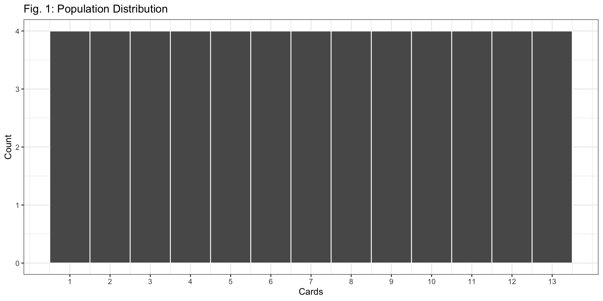
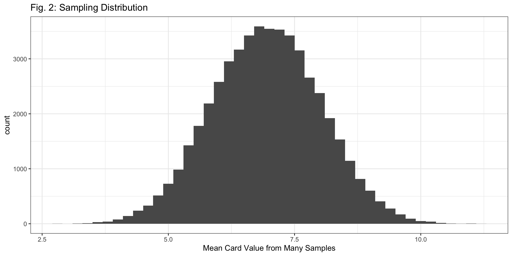
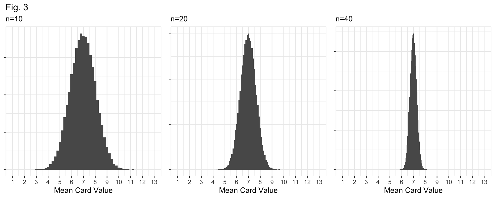
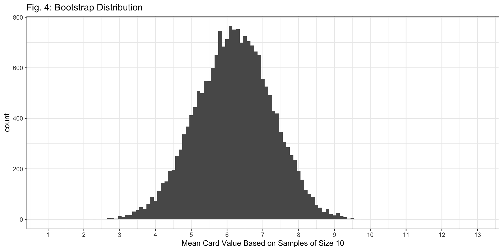
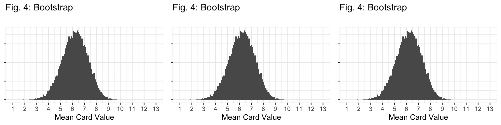
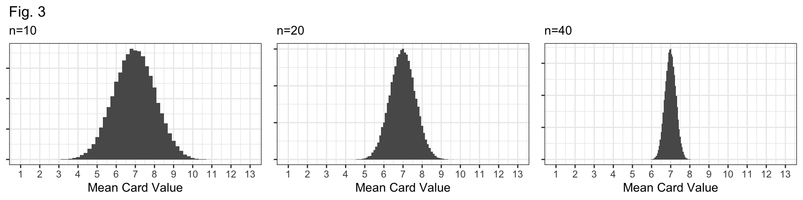

Complete a worksheet comparing sampling and bootstrap distributions
Review our answers together
Activity
Instructions
In small groups, carefully complete the worksheet
We’ll come together to discuss with 10-15 minutes remaining
Question 1
deck <-data.frame(cards =rep(1:13, each =4))

Q1: In Figure 1, why is the height of each bar 4? Describe this distribution (center, spread, shape).
There are four cards of each value in a deck.
The distribution has a “flat” shape, centered at 7 (mean = 7 and median = 7).
The distribution has a “large” spread. Standard Deviation: 3.78
Question 2
set.seed(1) # ensures we all get the same "random" samplesingle_sample <- deck %>%rep_sample_n(size =10, replace =FALSE, reps =1)single_sample$cards
[1] 1 10 1 9 6 11 4 5 9 6
Q2: Based on the code, which cards are in our sample? Use the cards to calculate our sample statistic (the sample mean) based on this sample.
We have two Ace’s (1’s), a 4, 5, two 6’s, two 9’s, a 10, and a Jack (11).
The sample mean is 6.2.
Question 3
deck %>%rep_sample_n(size =10, replace =FALSE, reps =50000) %>%group_by(replicate) %>%summarize(x_bar =mean(cards)) %>%ggplot(aes(x = x_bar)) +geom_histogram(binwidth =0.2) +theme_bw() +labs(x ="Mean Card Value from Many Samples",title ="Fig. 2: Sampling Distribution")

Q3: Based on the code above, how many cards are in each sample? How many different samples did we take to create the sampling distribution in Figure 2?
There are 10 cards in each sample, since size = 10.
We took 50,000 different samples, since reps = 50000.
Question 4
Q4: Figure 3 (below) displays sampling distributions for samples of size n=10, n=20, and n=40. How are they similar and how are they different? Why do larger samples have sampling distributions with less variability?
Bell-shaped and centered at the true mean, 7.
They differ in their spread: \(n=10\) distribution has the largest standard error; the \(n=40\) distribution has the smallest standard error.
Question 4
Q4: Figure 3 (below) displays sampling distributions for samples of size n=10, n=20, and n=40. How are they similar and how are they different? Why do larger samples have sampling distributions with less variability?

Why? If our sample size (\(n\)) is larger, we have more data and our sample should be “more representative” of the population.
i.e., more data means a better glimpse at the true population, and better guesses about the population mean!
Q5: In the code above, what are we sampling from (the population, or the single sample)? Are we sampling with replacement? What’s our sample size?
We’re sampling from the single sample (single_sample).
We’re sampling with replacement (replace = TRUE).
Our sample size is still 10 (size = 10)
Q6: How would your answers to Q5 be different if we were talking about sampling for a sampling distribution?
We sample from the population.
We sample without replacement.
Our sample size is still 10!
Question 7
single_sample %>%ungroup() %>%select(cards) %>%rep_sample_n(size =10, replace =TRUE, reps =20000) %>%group_by(replicate) %>%summarize(x_bar =mean(cards)) %>%ggplot(aes(x = x_bar)) +geom_histogram(binwidth =0.1) +labs(x ="Mean Card Value Based on Samples of Size 10",title ="Fig. 4: Bootstrap Distribution") +theme_bw() +scale_x_continuous(breaks =1:13, limits =c(1, 13))

Q7: Based on the code above, how many bootstrap samples are we taking to create the bootstrap distribution?
20,000 bootstrap samples because reps=20000.
Question 8
Q8: Which sampling distribution looks most like the bootstrap distribution in Figure 4? How specifically is it similar or different? Consider the shape, center, and spread of each distibution.
Question 8
The \(n=10\) sampling distribution!
Question 8
Shape: All distributions look bell-shaped, so this doesn’t distinguish them at all.
Question 8

Center: Bootstrap is centered at the sample mean (6.2); all sampling distributions are centered at the population mean (7).
Question 8

Spread: The spread of the bootstrap distribution looks similar to the spread of the sampling distribution with \(n=10\).
Question 9
Q9: Thinking more generally, compare and contrast sampling distributions and bootstrap distributions.
Sampling distributions and bootstrap distributions both help us conceptualize the distribution of a statistic, for the purpose of understanding plausible values for a parameter.
Sampling distributions and bootstrap distributions should have similar spread (e.g., a similar standard deviation).
Their means should also be similar, although a sampling distribution is centered at the true parameter, while a bootstrap distribution is centered at the sample mean.
Sampling distributions are usually not possible to obtain (we can only take one sample from the population). Bootstrap distributions approximate a sampling distribution, and are super easy to obtain (especially with code).
Looking ahead
In lab tomorrow we’ll get more practice actually working with the code from this worksheet
And no quiz tomorrow!
We’ll continue practicing this and comparing sampling and bootstrap distributions in Homework 6
Note: This may feel repetitive at times!
Why we’re doing it:
Sampling distributions (and how we approximate them) are one of the most fundamental concepts of this class.
Everything we learn from now on (ex. confidence intervals, hypothesis testing) builds upon them.
The more we lock in these concepts now, the more deeply we’ll be able to engage later.